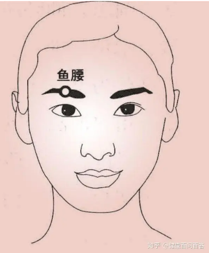

魚腰穴

位置：
定位法:眉毛中點凹陷處, 睜眼時, 瞳孔直上的位置。
取位：魚腰穴是指位於額部，瞳孔直上，眉毛中的穴位
按摩手法：
用食指在眉毛處以畫圈的方式進行輕揉按摩，直至眉毛處感覺到熱為止。
穴道介紹：
穴位一般都有調節局部氣血的功能, 魚腰穴也不例外。可以治療眼睛以及眼眶周圍、額面等部位的疾病,如下：
1、治療目赤腫痛、眼瞼下垂、近視、急性結膜炎等。
2、緩解面神經麻痺、三叉神經痛等。
3、緩解治療目生翳膜、偏正頭痛、眼瞼(目閏)動、口眼歪斜等。
4、鎮驚安神、明目利竅、疏風清熱、通絡止痛。
穴名介紹：
魚腰穴不屬於常見的十四正經, 為經外奇穴。首見於元代《銀海精微》, 在此書中記載為“光明穴”, 明代《醫學小經》才開始寫作“魚腰穴”。此穴屬於中醫腧穴，穴下有皮膚、皮下組織、眼輪匝肌和枕額肌額腹。分佈有眶上神經外側支，面神經的分支和眶上動、靜脈的外側支。